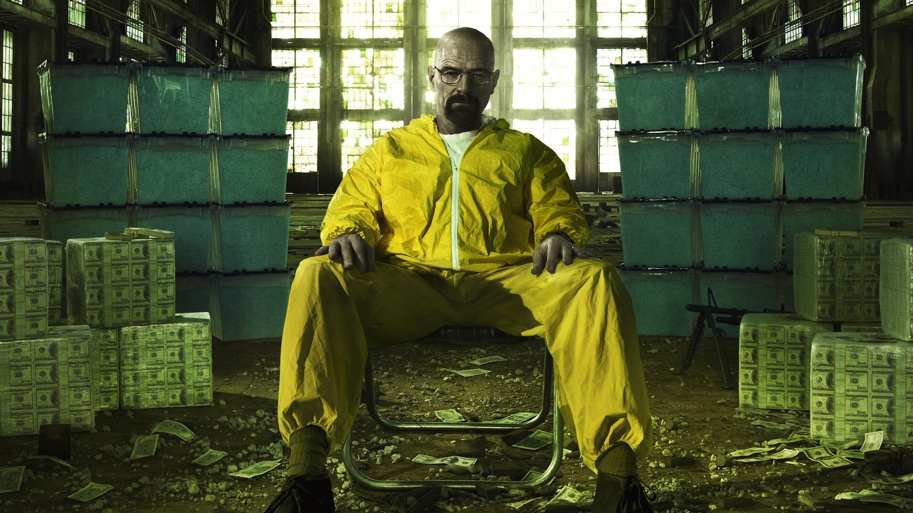

Interesting Facts
- Main Characters
- Walter White
- Jesse Pinkman
- Skyler White
- Saul Goodman
- Gus Fring
- Mike Ehrmantraut
- Fun Facts
- The show aired from 2008–2013.
- It won 16 Emmy Awards.
- The series was created by Vince Gilligan.
- Walter White's alias is "Heisenberg."
- The show was filmed primarily in Albuquerque, New Mexico.
- Top Rated Episodes
- Ozymandias
- Felina
- Face Off
- To'hajiilee
Breaking Bad Trailer
Breaking Bad Universe Dashboard
Explore this interactive Tableau visualization showing character connections throughout the Breaking Bad universe.